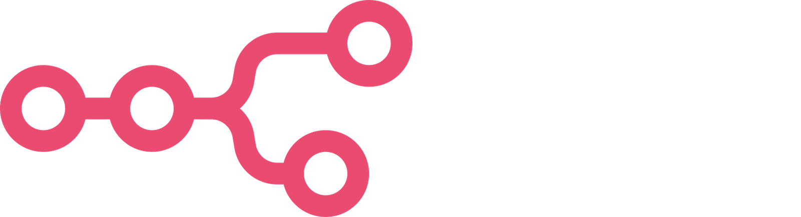

Giving small nonprofits the power of a grant-writing team.
A grant office that refuses to lie.
A small nonprofit is a founder and a cause. Finding the right funders, matching their rules, and writing a letter of inquiry is a full-time job nobody on staff has.
So the ask never gets written. And when software writes it for them, it can make the organization sound bigger than it is. One invented number can cost a founder their credibility with a funder.
A voice avatar takes the founder's story and builds a fact sheet the founder corrects.
Funders whose giving history matches, cut by eligibility rules.
The letter of inquiry and budget, from the fact sheet only.
Every sentence against what the founder actually said. Then a human signs.
Nothing is sent to a funder by the system. The founder approves, picks, and signs.
Voice intake. Produces the fact sheet everyone is bound to.
Foundations and program officers. Capped, cost-visible lookups.
Geography, budget size, status, deadlines. Flags what a human decides.
Drafts LOI and proposal sections from the fact sheet and funder profile.
Different model. Tags every claim by source. Blocks the unsupported.
Budget table, deadline reminders, metering and billing.
PromptQL backbone: rooms, bots over funder and budget sheets, a learning box with human approval.
Ask the W governance: the "agent does / human decides" map, shown as a page.
The founder approves the fact sheet, picks funders, approves learnings, and signs.
The Writer drafted it. The Auditor, on a different model, could not trace it to the interview, so the draft is blocked until the founder fixes the number. The checker can still miss errors; the human still signs.
Live: the Interviewer's face and voice.
Backbone: rooms, bots, learning box.
Funder Scout: foundations and program officers.
Writer and Auditor on different models, one key.

Deadline calendar, reminders, sheet sync.
Funder-match meter and success tier.
Governance: agent does / human decides.
7 core roles.
4 build roles below.
Code scan and Agent Scan.
PRs vs a "no fabricated facts" spec.
Sandbox and CI.
Sandbox for the Funder Scout.
Credits per matched funder, metered so the founder sees the cost of every lookup.
A success tier when a grant is won, so the office shares the outcome.
A sliding scale so the smallest organizations can afford a grant office.
No pricing has been tested with customers yet. Billing would be metered through Flexprice.